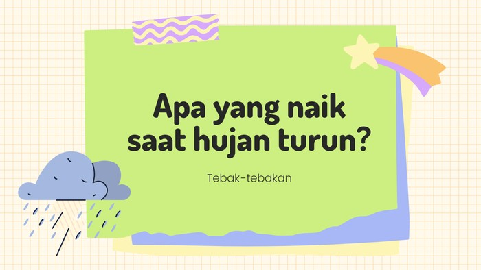
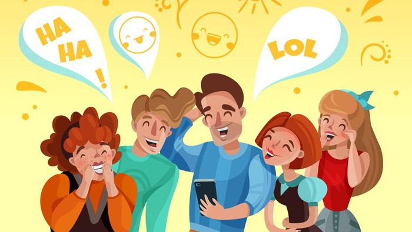

News
40 Ucapan Lucu Bikin Ketawa, Sederhana tapi Ampuh Usir Stres
Ucapan lucu bisa menjadi cara ampuh untuk mengusir stres dan membuat suasana hati lebih ceria. Berikut adalah beberapa contoh ucapan lucu yang bisa membuat Anda tertawa.
Posted on 19 June 2024

10 Tebak-tebakan yang Menghibur dan Melatih Otak Kembali Fokus
Tebak-tebakan adalah cara yang menyenangkan untuk menghibur diri sendiri dan melatih otak agar tetap fokus. Berikut adalah beberapa tebak-tebakan yang bisa Anda coba.
Posted on 19 June 2024

30 Pantun Lucu Bikin Ngakak, Ada Ubur-ubur Ikan Lele
Pantun lucu adalah salah satu bentuk hiburan yang bisa membuat suasana hati menjadi lebih ceria. Berikut adalah beberapa contoh pantun lucu yang bisa membuat Anda tertawa.
Posted on 19 June 2024